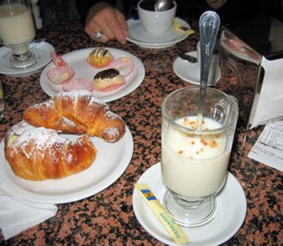

Among my favorite treats I get all the times when I visit Italy are the cream filled croissant (brioche alla crema) and the hot chocolate (cioccolata calda). Every coffee shop (bar) will sell fresh croissants as they are part of the traditional Italian breakfast cappuccino e brioche. American hot chocolate is usually prepared by mixing hot water with cocoa powder. If you order one in Italy, you'll find that the barista will mix the cocoa powder with real milk and stir and foam it for 15-20 seconds until a thick consistency has been achieved. I often found that hot chocolates that could hold my spoon standing still were the most delicious ones.